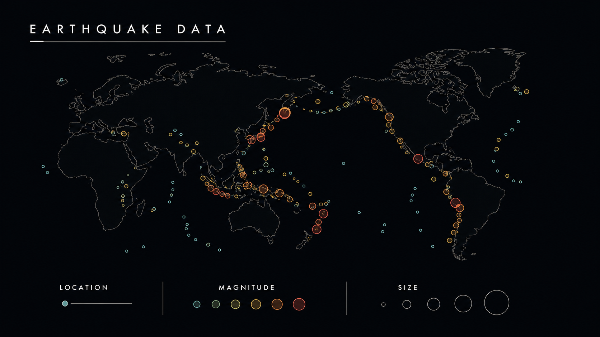
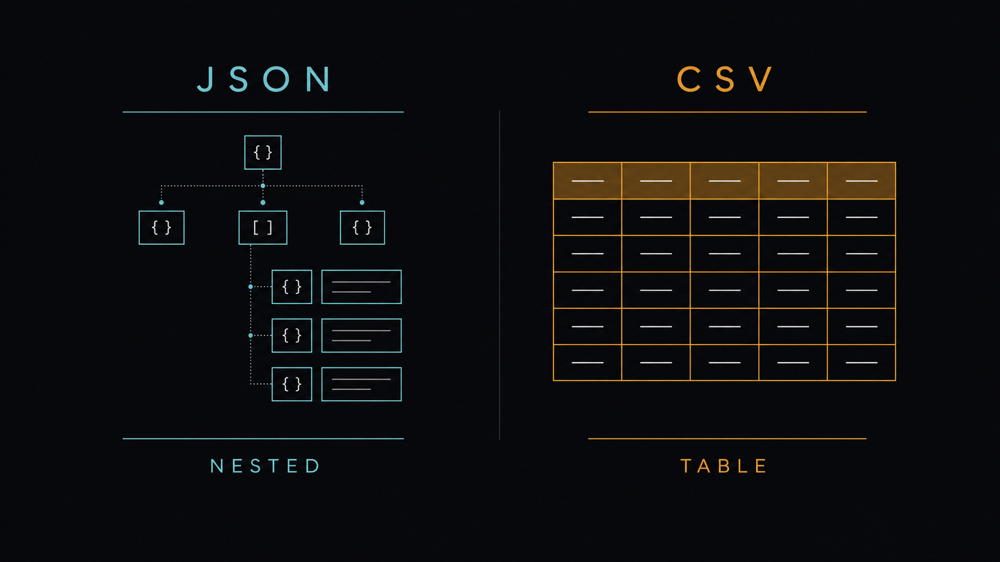
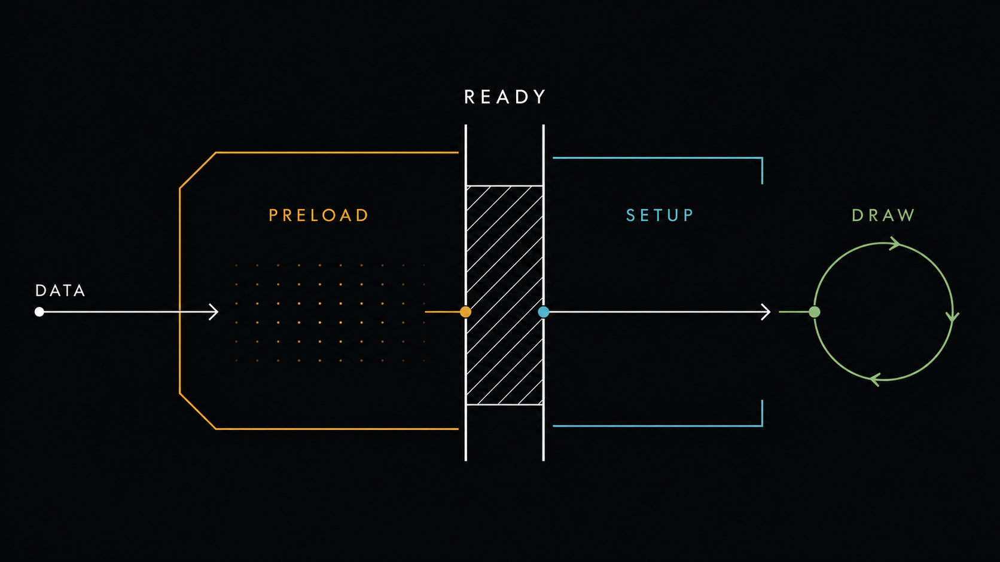
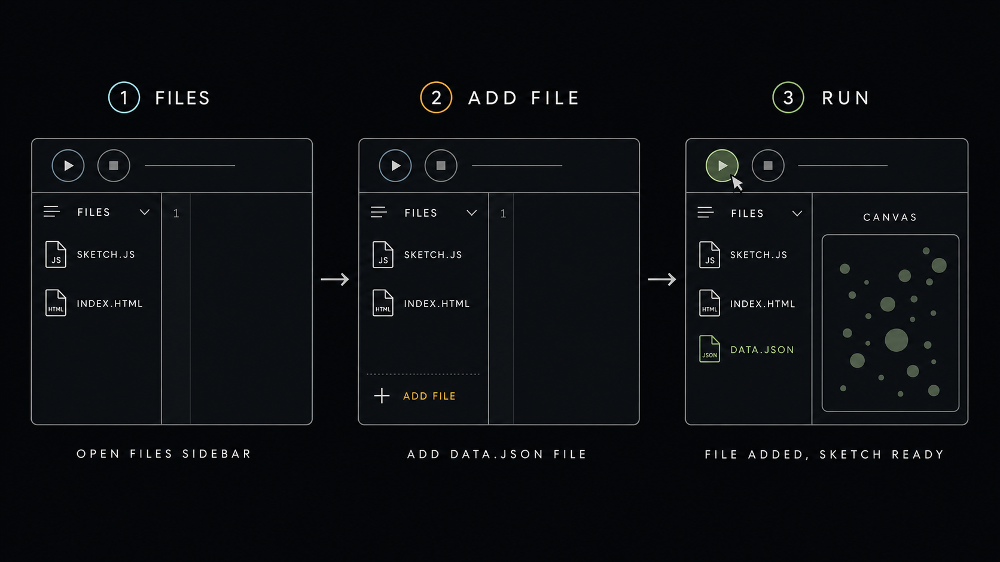

11주차 1교시 — 데이터를 코드로 불러오기: preload, JSON, CSV
강의 아웃라인: week-11-outline 다음 교시: week-11-period2-student (데이터를 시각으로 매핑)
| 항목 | 내용 |
|---|---|
| 대상 | P5.js 입문자 (테크아트 전공) |
| 소요 시간 | 45분 |
| 핵심 도구 | P5.js Web Editor, data.json, data.csv |
-
preload→setup→draw의 실행 순서를 설명할 수 있습니다 -
loadJSON으로 JSON 파일을 불러오고 점 표기법으로 데이터에 접근할 수 있습니다 -
loadTable로 CSV 파일을 불러오고getString/getNum으로 값을 꺼낼 수 있습니다
도입
10주차에서 11주차로
지난주에는 힘과 물리 시뮬레이션을 다루며 중력 0.1, 바람 0.05 같은 숫자를 코드에 직접 적었습니다. 손으로 쓴 숫자가 시뮬레이션을 움직였습니다.
이번 주는 한 발 더 나아갑니다. 그 숫자가 현실의 데이터라면 어떻게 될까요?
예를 들어, 오늘 서울의 실제 기온이 18도라면 파티클 색상이 미지근한 주황으로, 내일 5도로 떨어지면 자동으로 파란색으로 바뀌게 만들 수 있습니다. 코드는 그대로 두고 데이터 파일만 바꾸면 그림이 따라 바뀌는 구조입니다.
전 세계 지진 데이터를 점으로 표현한 시각화에서, 지진이 큰 곳은 큰 원, 작은 곳은 작은 원으로 그려지는 예시를 떠올려보세요. 이 그림에서 숫자를 손으로 입력한 것은 한 개도 없습니다. 전부 데이터 파일에서 자동으로 가져온 값입니다.

오늘 배우는 것은 바로 이것입니다 — 외부 데이터 파일을 P5.js로 불러와서, 데이터가 그림을 만들게 하기.
오늘 할 일
이번 시간이 끝나면 다음 세 가지를 할 수 있게 됩니다.
- JSON 파일과 CSV 파일을 구분하고, 메모장으로 열어서 읽을 수 있다
preload()가 왜 필요한지 30초 안에 설명할 수 있다- JSON과 CSV 양쪽에서 도시 인구 데이터를 꺼낼 수 있다
데이터를 다루는 두 가지 태도
본격적으로 들어가기 전에, ’데이터로 무언가를 한다’는 것이 어떤 의미인지 정리합니다. 크게 두 가지 태도가 있습니다.
데이터 시각화 — 데이터를 읽히게 만드는 일입니다. 막대 그래프, 선 그래프, 지도 위의 점이 대표적인 예입니다. 목적은 정보 전달입니다. “이 도시 인구가 저 도시보다 두 배 많다”가 한눈에 보여야 성공한 시각화입니다.
데이터 아트 — 데이터를 느끼게 만드는 일입니다. 정확한 비교는 어려워도, 보면서 어떤 인상이나 감정이 남는 표현입니다. 경험이 목적입니다.

두 작품을 짧게 살펴봅니다.
Dear Data (조지아 루피·스테파니 포사베츠) — 두 디자이너가 1년 동안 매주 자기 일상을 데이터로 기록해서, ‘이번 주에 웃은 횟수’, ‘잠을 못 잔 시간’, ‘거울 본 횟수’ 같은 일상의 숫자를 엽서에 손으로 그려 서로 보낸 작업입니다. 숫자가 색·선·도형으로 바뀌었습니다.

Aaron Koblin “Flight Patterns” — 미국의 모든 항공편을 선으로 그린 작품입니다. 데이터가 수십만 건인데, 자동으로 그렸더니 미국 지도의 윤곽이 저절로 떠올랐습니다.
두 사례 모두 데이터가 색, 선, 위치 같은 시각 요소로 번역됐다는 점이 같습니다. 오늘 배우는 기술이 이 과정을 코드로 가능하게 합니다. 표현 방향은 작업자의 선택입니다.
핵심 개념 1 — JSON과 CSV, 두 가지 데이터 파일 형식
오늘 다룰 파일 형식은 두 가지입니다. 코드로 들어가기 전에 파일 자체의 모양을 봅니다.
JSON
첫 번째는 JSON입니다. 풀어쓰면 JavaScript Object Notation. 이름에 JavaScript가 들어 있고, P5.js도 JavaScript 기반이라 둘의 궁합이 좋습니다.
{
"cities": [
{ "name": "서울", "population": 9736027, "area": 605 },
{ "name": "부산", "population": 3359527, "area": 770 },
{ "name": "대구", "population": 2385412, "area": 883 }
]
}세 가지 기호만 알면 구조를 읽을 수 있습니다.
- 중괄호
{ }— 하나의 묶음 (객체). 7주차 클래스로 만든 객체와 같은 모양입니다 "키": 값— 이름표와 내용."name": "서울"은 “name이라는 이름표 아래 서울이 있다”는 의미입니다- 대괄호
[ ]— 같은 종류 여러 개를 줄 세운 것 (배열)."cities": [ ... ]는 도시들이 줄 서 있는 모양입니다
7주차에서 ball.x, ball.size로 객체의 값을
꺼냈던 것과 같이, JSON에서도 점(.)으로 값을 꺼냅니다.
CSV
두 번째는 CSV입니다. Comma-Separated Values, 쉼표로 구분된 값. JSON보다 훨씬 단순합니다.
name,population,area
서울,9736027,605
부산,3359527,770
대구,2385412,883표 형태입니다. 첫 줄은 열 이름(header)이고, 그 아래는 각 행입니다. 쉼표가 칸막이 역할을 합니다.
엑셀이나 구글 시트에서 ’다른 이름으로 저장 → CSV’를 누르면 정확히 이 형태가 됩니다. 스프레드시트에서 만든 데이터를 그대로 P5.js로 가져올 수 있습니다.
둘을 언제 쓸까
| 항목 | JSON | CSV |
|---|---|---|
| 모양 | 중괄호 + 키-값, 중첩 가능 | 쉼표 구분 표, 단순 |
| 접근 방법 | 키 이름으로 (data.cities[0].name) |
행 번호 + 열 이름 (table.getString(0, "name")) |
| 어울리는 데이터 | 웹 API, 설정 파일, 중첩 구조 | 엑셀에서 내보낸 통계, 단순 표 |
| 공통점 | 둘 다 일반 텍스트 파일. 메모장으로 열 수 있습니다 |

표 형태면 CSV, 중첩 구조면 JSON. 오늘은 둘 다 다룹니다. 실습에서는 JSON으로 진행하지만, CSV도 같이 알면 어디서 데이터를 가져와도 대응할 수 있습니다.
엑셀에서 만든 가게 매출 표를 P5.js로 가져오려면 어떤 형식이 더 자연스러울까요?
답: CSV. 엑셀에서 바로 내보내기 가능하고, 표 구조라서 잘 맞습니다.
핵심 개념 2 —
preload()가 왜 따로 있을까
지금까지의 실행 순서
지금까지 사용한 P5.js의 흐름은 다음과 같았습니다.
setup() → draw() → draw() → draw() → ...setup()이 한 번, draw()가 매 프레임
반복되는 구조입니다. 오늘부터는 여기에 하나가 더
추가됩니다.
preload() → setup() → draw() → draw() → ...preload()가 가장 앞에 있고, preload() 안의
일이 완전히 끝날 때까지 setup()은 시작되지
않습니다.

왜 따로 있는가
이유는 한 가지 사실 때문입니다 — 데이터 파일을 읽는 데는 시간이 걸립니다.
파일이 크면 더 오래 걸리고, 인터넷에서 가져오면 네트워크 속도에 따라
들쭉날쭉합니다. 만약 setup() 안에서 loadJSON을
호출하면 다음과 같은 일이 벌어집니다.
let data;
function setup() {
createCanvas(400, 400);
data = loadJSON("data.json"); // 읽기 시작 (끝날 때까지 안 기다림)
console.log(data); // 아직 비어 있음 → undefined
}loadJSON은 읽기를 시작만 하고 바로 다음
줄로 넘어갑니다. 그 다음 줄에서 data를 쓰려고 하면 아직
비어 있어서 에러가 발생합니다.
preload()는 이 문제를 해결합니다. P5.js에게 ‘이 안의
일이 다 끝날 때까지 setup() 시작하지 마’ 라고 알려주는
자리입니다.
식당 비유
preload()는 식당의 재료 준비 단계에
해당합니다. 셰프(setup)가 요리를 시작하기 전에 재료가 다
배달되어야 합니다. 채소도 안 왔는데 도마부터 두드리면 진행이 막힙니다.
그래서 P5.js는 ’재료 다 왔어요’라는 신호를 받을 때까지 셰프를
잡아둡니다.
기본 구조
let data;
function preload() {
data = loadJSON("data.json"); // 데이터 준비
}
function setup() {
createCanvas(400, 400);
console.log(data); // 여기에선 data가 준비되어 있음
}
function draw() {
background(220);
}이번 수업에서는 preload() 안에 로드
함수만 둡니다. loadJSON, loadTable,
loadImage, loadFont 같은 함수들입니다.
createCanvas나 도형 그리기는 setup()에서 해야
합니다.
P5.js의 실행 순서를 세 단계로 말해볼까요?
답: preload() → setup() →
draw() 반복.
핵심 개념 3 —
loadJSON()으로 JSON 불러오기
파일 준비
P5.js Web Editor에서 데이터 파일을 추가합니다.

- 화면 왼쪽 위 화살표() 클릭해서 파일 패널 열기
- 파일 목록 위쪽의 ▼ 클릭 → “Create File” 선택
- 파일명
data.json입력 후 생성 - 아래 내용을 그대로 붙여넣고 저장 (Ctrl/Cmd + S)
{
"cities": [
{ "name": "서울", "population": 9736027, "area": 605 },
{ "name": "부산", "population": 3359527, "area": 770 },
{ "name": "대구", "population": 2385412, "area": 883 },
{ "name": "인천", "population": 2948375, "area": 1063 },
{ "name": "광주", "population": 1455048, "area": 501 }
]
}한국 5개 도시의 이름·인구·면적 데이터입니다. 곧 이 데이터를 코드로 꺼냅니다.
로드하고 콘솔로 확인
let cityData;
function preload() {
cityData = loadJSON("data.json");
}
function setup() {
createCanvas(400, 400);
console.log(cityData);
}이게 전부입니다. preload()에서 한 줄,
setup()에서 콘솔 확인 한 줄.
데이터를 시각화하기 전에 항상 console.log로 데이터
모양을 먼저 봅니다. 데이터를 안 보고 그림부터 그리면, 버그가 났을 때
무엇이 잘못된 것인지 찾기 어렵습니다.
점 표기법 — 한 단계만 깊이 가보기
데이터 안의 값을 꺼낼 때는 점(.)을 써서 단계별로
들어갑니다.
function setup() {
createCanvas(400, 400);
console.log(cityData.cities); // 도시 배열 5개
console.log(cityData.cities[0]); // 첫 번째 도시 객체
console.log(cityData.cities[0].name); // "서울"
}세 줄에서 점이 한 단계씩 깊어집니다. cityData → 그 안의
cities 배열 → 0번째 → 그 객체의 name.
7주차에 ball.x로 객체 프로퍼티 꺼냈던 그 문법,
그대로입니다. 새 문법이 아닙니다.
모든 도시 꺼내기 — for문
도시 5개를 cities[0], cities[1]처럼 다섯
줄로 쓰는 대신, 6주차 for문을 그대로 가져옵니다.
function setup() {
createCanvas(400, 400);
let cities = cityData.cities;
for (let i = 0; i < cities.length; i++) {
let city = cities[i];
console.log(city.name + " — 인구 " + city.population);
}
}기대 콘솔 출력.
서울 — 인구 9736027
부산 — 인구 3359527
대구 — 인구 2385412
인천 — 인구 2948375
광주 — 인구 1455048let city = cities[i] 한 줄이 핵심입니다. i번째 도시를
city라는 짧은 이름으로 받아두면, 그 다음부터
city.name, city.population로 깔끔하게 쓸 수
있습니다. cities[i].name을 반복하는 것보다 읽기
좋습니다.
cityData.cities[2].name은 어떤 도시일까요?
답: 대구. 인덱스 0이 서울이니까 2면 세 번째, 대구.
핵심 개념 4 —
loadTable()로 CSV 불러오기
파일 준비
P5.js Web Editor에서 data.csv 파일을 새로 만들고 아래
내용을 붙여넣습니다.
name,population,area
서울,9736027,605
부산,3359527,770
대구,2385412,883
인천,2948375,1063
광주,1455048,501JSON과 똑같은 데이터, 형식만 표입니다.
로드 — 인자 세 개
let table;
function preload() {
table = loadTable("data.csv", "csv", "header");
}
function setup() {
createCanvas(400, 400);
console.log(table.getRowCount());
}loadTable의 인자가 세 개입니다.
"data.csv"— 파일 이름"csv"— 형식이 CSV라고 알려주는 표시"header"— 첫 줄을 데이터가 아니라 열 이름으로 인식하라는 지시. 이걸 빼면 “name, population, area”도 데이터로 들어가서 결과가 망가집니다
table.getRowCount()로 행 수를 찍어보면
5가 나옵니다. 헤더 빼고 5줄.
값 꺼내기 — 두 메서드만 기억
function setup() {
createCanvas(400, 400);
console.log(table.getString(0, "name")); // "서울"
console.log(table.getNum(0, "population")); // 9736027
}메서드 두 개만 알면 됩니다.
getString(행번호, "열이름")— 글자(이름·문자) 가져오기getNum(행번호, "열이름")— 숫자 가져오기
CSV 파일에서는 모든 값이 먼저 글자로 저장됩니다.
숫자도 "9736027"이라는 글자로 들어 있습니다.
getNum은 그 값을 실제 숫자로 바꿔주는 함수입니다.
인구를 getString으로 꺼내서 더하면?
9736027 + 3359527 = 13095554가 아니라, 글자 이어붙이기
"97360273359527"이 됩니다. 숫자는 반드시
getNum.
전체 행 순회
for문으로 행 번호를 돌립니다.
function setup() {
createCanvas(400, 400);
for (let r = 0; r < table.getRowCount(); r++) {
let name = table.getString(r, "name");
let pop = table.getNum(r, "population");
console.log(name + " — 인구 " + pop);
}
}JSON에서 cities[i].name을 꺼냈던 것과 패턴이 똑같습니다.
for문으로 인덱스 돌리고, 각 항목에서 값 두 개 꺼내고,
사용. JSON이든 CSV든 이 패턴만 익히면 됩니다.
JSON과 CSV 비교
| 작업 | JSON | CSV |
|---|---|---|
| 로드 | loadJSON("file.json") |
loadTable("file.csv", "csv", "header") |
| 전체 개수 | data.cities.length |
table.getRowCount() |
| i번째 이름 | data.cities[i].name |
table.getString(i, "name") |
| i번째 인구 | data.cities[i].population |
table.getNum(i, "population") |
| 핵심 패턴 | for문으로 인덱스 돌리기 | for문으로 인덱스 돌리기 |
JSON은 점으로, CSV는 메서드로. for문 순회 패턴은 똑같다.
CSV에서 인구 숫자를 가져올 때 getString 쓰면 어떻게
될까요?
답: 글자로 와서 숫자 계산이 안 됩니다.
getNum을 써야 합니다.
예제 — 처음부터 끝까지 한 번에
지금까지 본 내용을 P5.js Web Editor에서 처음부터 끝까지 이어 봅니다.
예제 1 — JSON 로드
- P5.js Web Editor에서 새 스케치 열기
- 파일 패널에서
data.json새로 만들고, 도시 5개 데이터 붙여넣기 → 저장 sketch.js에 아래 코드 입력
let cityData;
function preload() {
cityData = loadJSON("data.json");
}
function setup() {
createCanvas(400, 400);
console.log(cityData);
console.log(cityData.cities[0].name);
}- 실행 → 콘솔 열기
- 첫 줄에 객체, 두 번째 줄에
"서울"이 찍히는지 확인 - 콘솔에서 객체 옆 화살표()를 클릭해 펼쳐 보면 데이터 구조가 한눈에 들어옵니다
시각화 들어가기 전에 항상 이 단계를 거치는 습관을 들이세요.
예제 2 — CSV 로드
- 파일 패널에서
data.csv새로 만들고, 같은 데이터를 CSV로 붙여넣기 → 저장 sketch.js를 아래로 교체
let table;
function preload() {
table = loadTable("data.csv", "csv", "header");
}
function setup() {
createCanvas(400, 400);
console.log("행 수: " + table.getRowCount());
for (let r = 0; r < table.getRowCount(); r++) {
console.log(table.getString(r, "name") + " — " + table.getNum(r, "population"));
}
}- 실행 → 콘솔에서 5개 도시 출력 확인
JSON과 모양은 다르지만, 콘솔에 찍히는 결과는 똑같습니다. 도구만 다른 것입니다.
예제 3 —
preload()를 빼면 어떻게 되는가
JSON 스케치로 돌아가서, preload를 통째로 주석 처리하거나
삭제하고, loadJSON 호출을 setup() 안 첫 줄로
옮깁니다.
let cityData;
// function preload() {
// cityData = loadJSON("data.json");
// }
function setup() {
createCanvas(400, 400);
cityData = loadJSON("data.json");
console.log(cityData.cities[0].name); // 에러 예정
}실행하면 콘솔에 다음 에러가 출력됩니다.
TypeError: Cannot read properties of undefined (reading 'cities')cityData가 아직 안 채워진 상태에서
.cities를 꺼내려고 하니까 에러입니다. 비유로만 설명했던
식당 이야기가 실제 코드에서 그대로 나타나는 장면입니다.
다시 preload로 옮기고 실행하면 정상 출력됩니다. 앞으로
같은 에러를 만나면 ‘preload 빼먹었구나’ 떠올리면
됩니다.
정리
한 화면 요약
| 개념 | 한 줄 정의 | 핵심 코드 |
|---|---|---|
| JSON | 중괄호 + 키-값, 중첩 가능 | loadJSON("file.json") /
data.cities[i].name |
| CSV | 쉼표 구분 표, 단순 | loadTable("file.csv", "csv", "header") /
table.getNum(i, "population") |
preload() |
데이터 다 준비될 때까지 setup 대기 |
preload → setup → draw 순서 |
JSON은 점으로, CSV는 메서드로, 데이터를 불러올 땐 항상
preload()로.
2교시 예고
1교시에서는 데이터를 불러와서 콘솔에 찍는 단계까지 진행했습니다. 2교시에서는 이 데이터를 그림으로 바꿉니다.
핵심은 5주차에서 배운 map()입니다. 인구 → 원 크기, 면적
→ 위치, 인덱스 → 색상. 데이터의 숫자를 시각 요소로 번역하는 작업이
데이터 시각화·데이터 아트의 출발점입니다.